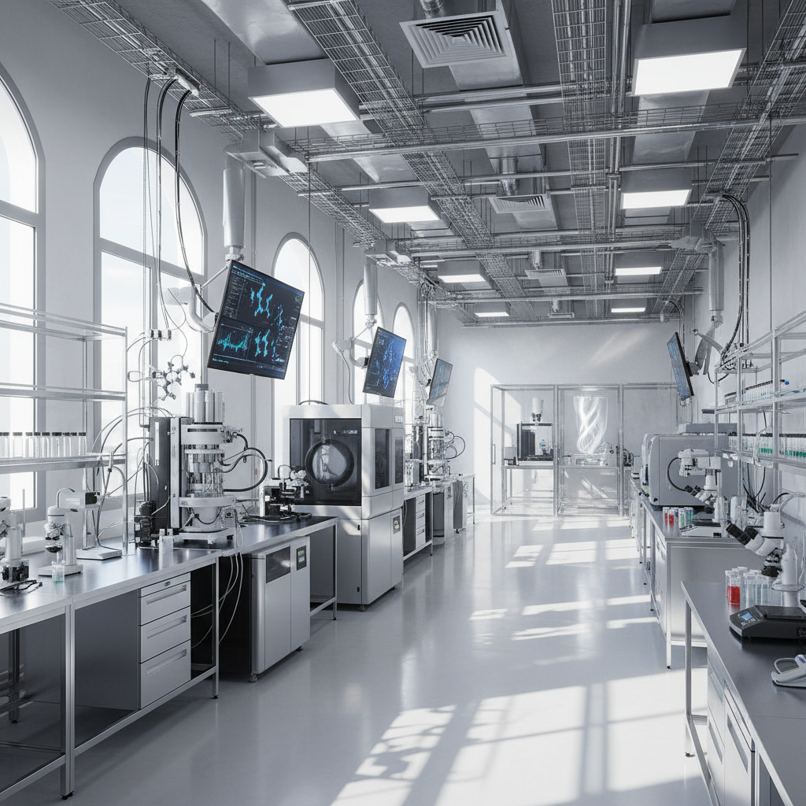
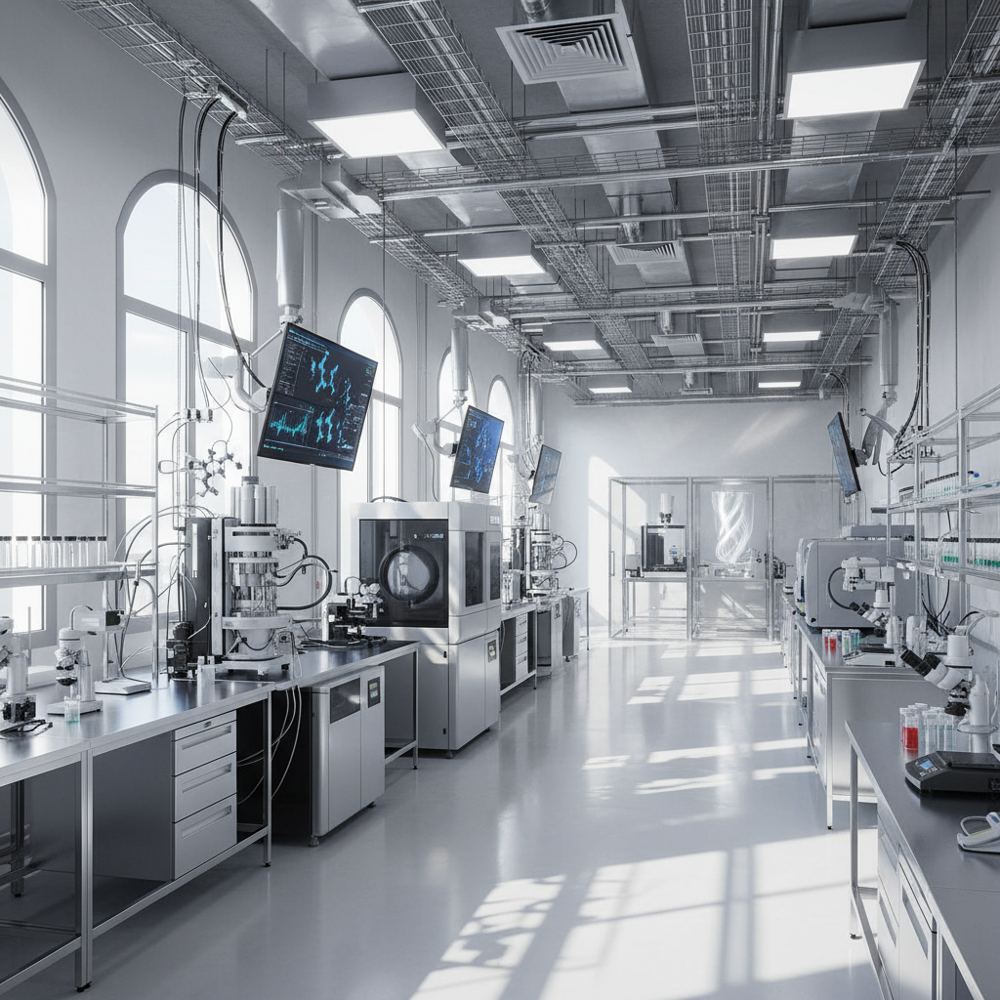

關於我們
華翔興業有限公司專注於高性能尼龍 MXD6 的市場開發與技術服務，引進七彩化學所生產的「愛寶力™」系列材料。
歷史與願景
華翔興業有限公司深耕化學品領域多年，初期以銷售高品質有機顏料與溶劑染料建立市場信譽，為客戶提供優質材料解決方案。隨著市場對高性能材料的需求日增，我們將業務重心拓展至由七彩化學所生產的高性能尼龍 MXD6，致力於為台灣的工程塑料與阻隔包裝產業客戶，提供穩定、可靠的供應與專業技術服務。
核心價值
- 誠信合規
- 技術導向
- 長期合作
華翔興業有限公司專注於高性能尼龍 MXD6 的市場開發與技術服務，引進七彩化學所生產的「愛寶力™」系列材料。
華翔興業有限公司深耕化學品領域多年，初期以銷售高品質有機顏料與溶劑染料建立市場信譽，為客戶提供優質材料解決方案。隨著市場對高性能材料的需求日增，我們將業務重心拓展至由七彩化學所生產的高性能尼龍 MXD6，致力於為台灣的工程塑料與阻隔包裝產業客戶，提供穩定、可靠的供應與專業技術服務。